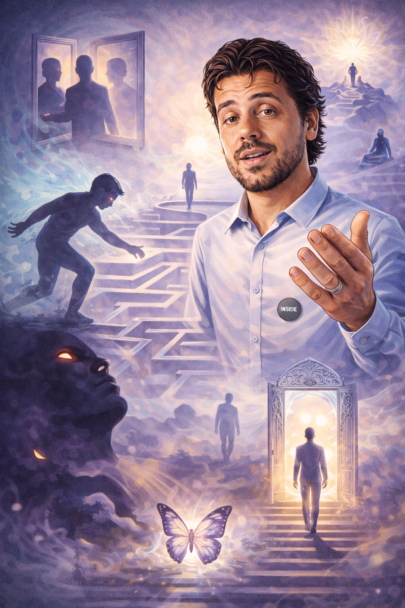

SUA VIDA PARECE TRAVADA E VOCÊ NÃO ENTENDE O PORQUÊ?
Bloqueios financeiros, fracassos no amor ou medos irracionais... O peso que você carrega hoje não é seu. Chegou a hora de cortar o que te prende ao passado.
QUEBRAR ESTE CICLO AGORA
Bloqueios financeiros, fracassos no amor ou medos irracionais... O peso que você carrega hoje não é seu. Chegou a hora de cortar o que te prende ao passado.
QUEBRAR ESTE CICLO AGORA
30 minutos online para identificarmos a raiz do seu bloqueio. Sem rodeios.
AGENDAR MINHA VAGAA Captação Psíquica entrega resultados de regressão tradicional sem que você precise "apagar" ou ter dificuldade em relaxar.
Eu acesso as memórias e registros por você. Você assiste ao processo consciente, enquanto limpamos a carga que trava seu presente.
Limpamos o medo do sucesso e os votos de pobreza que sua alma ainda carrega.
Quebramos o ciclo de abandono e rejeição que você repete em seus vínculos.
Dores e fobias sem explicação médica são memórias traumáticas. Limpe a alma e o corpo relaxa.

Minha missão é simples: por que você continua sofrendo se o seu potencial é infinito?
Unindo a **Psicanálise** à força das terapias de vidas passadas, desenvolvi um método focado em resultados velozes. Sem misticismo vazio, apenas libertação real.
Ver você assumir o comando da sua própria história é o que me move.
CONHECER A PSICANÁLISE